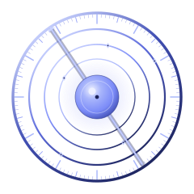
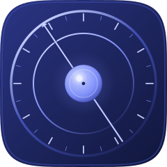
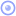
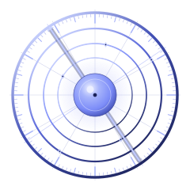
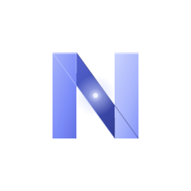
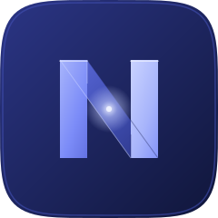
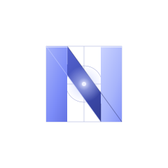
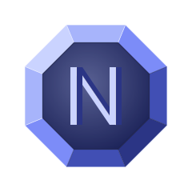
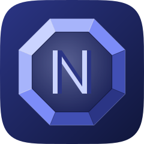
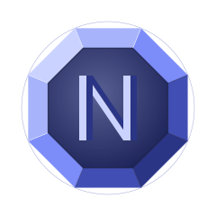

Uma cor dominante (índigo #7C8CF8) numa rampa tonal, luz do canto superior-esquerdo,
geometria construída a partir da grade. Três níveis por conceito: marca completa → ícone de app → favicon 16px.
A geometria está em generate.mjs.
Quatro anéis concêntricos (as esferas da vida) em raios 104/84/65/47, clareando para dentro para que a luz convirja no núcleo — o nexo. O limbo externo é graduado como um instrumento de medida (tiques a cada 3°, hierarquizados a cada 15°/30°). A alidade cruza o centro a −34°, o mesmo ângulo da diagonal do N do conceito 2. Em 16px colapsa para anel + núcleo.



16px
O N é uma fita de largura 30 que dobra sobre si mesma: poste esquerdo → diagonal → poste direito. A luz muda a cada dobra — o poste esquerdo é médio, a diagonal escurece (a face virou pra longe da luz), o poste direito clareia (voltou pra luz) — profundidade sem 3D. O centro geométrico ganha o brilho do nexo.



Um octógono biselado: 8 trapézios na moldura, cada um com o tom que a sua orientação recebe da luz — a gema pega luz na borda. No campo central recuado, um N em prisma: cada haste tem duas facetas (lado claro / lado escuro) e uma crista especular. As arestas internas formam o N. Passa permanência.


